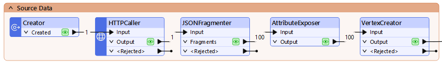

Terminology
Data silo
Data or databases that are maintained and used outside of organization-wide data administration. Often, they are associated with a single individual or department.
Data integration
The process of bringing together data from disparate sources in a unified view to create a dataset with both valuable and usable information.
Spatial data
Data that is representative of a specific geographic location on the surface of the Earth.
Geographic information system (GIS)
A system designed to capture, store, manipulate, analyze, manage, and present all types of spatial data.
Data Silos
Many organizations today face data challenges, including:
- Separate software systems make accessing data difficult.
- Existing integration processes are manual and labor-intensive.
- Poor data quality means wasting time on manual data cleaning.
Specifically, many data professionals encounter data silos.
When data is in a silo, it tends to work well enough for the people who use it every day. It lives in their systems, and they have easy access to it.
But when it comes time to send that data to another system or to grant access to another team, problems emerge. Team members have to send data back and forth manually, slowing work down and introducing human error. Otherwise, staff or consultants must build expensive pipelines to move data. These systems can work for a time, but what happens when requirements change, and the consultants are long gone? Or when team members with coding skills are needed for other work? Data remains stuck in silos, and business processes grind to a halt.
The Value of Enterprise Integration
The solution to data silos is enterprise data integration. You need a platform that sits between all your data sources and your end users, getting them the data they need when they need it.
Let's explore the value of enterprise integration through an example. Do you work with spatial data? Click one of the following examples based on the kind of data you work with to learn more.
Spatial Data: City of Naperville Example

The City of Naperville, Illinois, automated 3,300+ service requests and work orders in its first year using FME. They used FME to break down data silos across their Electric, Public Works, Finance, and Water departments, delivering more with fewer staff. They use FME to integrate several technologies, including:
- Cityworks for asset management
- Excel for electric meter requests
- PowerBI for dashboarding
- ArcGIS Survey123 for service requests
- ArcGIS Open Data
One specific workflow they bulit using FME let citizens submit service requests through Survey123. FME then took the survey data and transformed it into the schema required for loading into the Cityworks asset management system as work orders. Finally, they used FME to send the work order data to Power BI, where they were able to visualize it.

City of Naperville workflow diagram
Through this FME-powered integration, they took a previously manual work order submission process and automated it, saving staff valuable time.

City of Naperville input and output
Danielle DuBose, Database Developer in Naperville’s IT department, says, “Our customer experience has improved, and we have reduced department frustration through upgrading business processes with FME. It’s been a game changer for us."
Learn more about the City of Naperville's use of FME in this customer story.
Tabular, Database, and Other Data: UK Power Networks Example

UK Power Networks used FME and AI to automate the classification and metadata extraction of over one million historical documents in just 26 hours, saving 19 years of manual work.
They faced a problem: they had scanned images of over one million service record documents, many of which were handwritten. They needed to extract the service dates from these cards.
So, they built a system using FME. FME loaded the card images and metadata onto Azure, used Azure Queue for paralell processing (processing up to 20 images at a time), and sent the images to Gemini and had it extract the dates. Then they had Gemini store the extracted data as JSON and loaded it into an Azure SQL database. All of this was possible thanks to FME's flexibility on data storage location and AI vendor.

UK Power Networks workflow diagram
In the end, they turned the unstructured data in the documents into a huge structured database, saving a massive amount of time and money.

UK Power Networks input and output
Learn more about the UK Power Networks' use of FME in this customer story.
Note: Most of the workflows shown on the FME Academy use spatial data. However, FME treats data with geometry or without geometry largely the same, so the techniques you will learn will apply regardless of what data you use.
Removing data silos through enterprise integration can:
- Improve data sharing and accessibility between internal teams and external vendors.
- Enable faster and more accurate decision-making.
- Reduce manual effort and save valuable staff time for higher-value work.
Next, we'll have a look at how you can use the FME platform to achieve enterprise integration.
What is FME?
The FME Platform has built-in support for thousands of systems as well as 800+ out-of-the-box transformers allowing users to build and automate custom integration workflows without having to code. Whether your data challenges have to do with spatial data, big data, stream processing, cloud migration, or business intelligence, FME is here to help you spend more time using data, and less time fighting it.

Why Choose FME?
Today, change is happening faster than ever before. You need the ability to pivot, to change course, to adapt, embrace new technologies. Click on one of the boxes below to learn why you should use FME.
Any-Data, All-AI
Today, change is happening faster than ever before. You need the ability to pivot, to change course, to adapt, embrace new technologies.
The FME platform is all about choice. We offer you choice in all aspects of the platform:
- Choice of AI
- Any AI model or platform (open-source, proprietary, cloud, on-premises)
- Choice of Data Type
- Any data source and destination, regardless of type
- Over 1,000 integrations
- Choice of Location
- Process anywhere (any cloud, on-premises, edge, containers, embedded, hybrid, mixed)
- Choice of Data Velocity
- Process data in batch, real-time event or data streaming workflows
No- or Low-Code Environment
One key differentiator for the FME platform is that you author data integration workflows in a no- or low-code environment. Our technology uses a drag-and-drop, visual system for building data integration workflows, meaning authors don't need any special technical expertise to begin work. If they want to work without any code at all, that's possible. But if they already know some Python, SQL, Cypher, or R, they can integrate them into their FME workflows easily.
Having a no-code integration tool lets you democratize integration work, letting end-users and those most knowledgable about the data build the workflows, instead of outside consultants who may be missing important context.


No-code interfaces in the FME platform
What is Safe Software?
Safe Software produces FME. We are an all-data integration solution company that helps organizations bring life to their data. With over 30 years of expertise and 25,000+ enterprise customers across 125+ countries, whatever your data challenge is, we can help you.

Leave Us Feedback on This Lesson